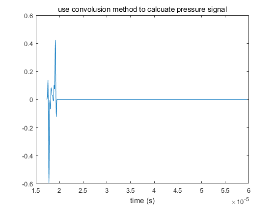

clear all
close all
fclose('all');
a=3e-3;
ds=0.4e-3;
x_1=-a:ds:a;
y_1=-a:ds:a;
x_0=-30e-3:0.5e-3:30e-3;
x_0=10e-3;
y_0=0e-3;
z_0=25e-3;
f_c=2.5e6;
f_Sample=10*f_c;
N_FFT=1024;
t_s=0:1/f_Sample:0.8e-6;
s=[sin(0.25*2*pi*f_c*t_s).^2.*sin(2*pi*f_c*t_s) zeros(1, N_FFT - length(t_s))];
c_0=1500;
df=f_Sample/N_FFT;
f_c = 0:df:floor(N_FFT/2)*df;
f=f_c;
R=zeros(length(x_1), length(y_1));
H=zeros(length(x_0), length(f));
h_WB=waitbar(0);
tic
for m=1:length(x_1)
for n=1:length(y_1)
for q=1:length(x_0)
if sqrt(x_1(m)^2 + y_1(n)^2)<=a
r =[x_0(q) - x_1(m) y_0-y_1(n) z_0];
R(m,n) = sqrt(sum(r.*r));
for i=1:length(f)
k(i) = 2*pi*f(i)/c_0;
H(q, i)=H(q, i) + exp(-1i*k(i)*R(m,n))/R(m,n);
end
end
end
end
waitbar(m/length(x_1), h_WB);
end
t_1=toc;
close(h_WB)
n=find(R==0);
R(n)=NaN;
X= fft(s);
Y_Phi = X(1:length(H(1,:))).*H(1,:);
Phi = ifftmmv(Y_Phi, N_FFT);
t=(0:length(Phi) - 1)/f_Sample;
n_b = floor(min(R(:))/c_0*f_Sample)-1;
n_e = ceil(max(R(:))/c_0*f_Sample)+1;
n=n_b + (length(t_s) + (n_e - n_b + 1) - 1) - 1;
figure;
plot(t,s,'r');
title("original source signal");
xlabel("time (s)");
figure;
plot(t(n_b:n), Phi(n_b:n)/max(abs(Phi(n_b:n))), 'b-', 'LineWidth', 2);
title("use impulse response to calcuate pressure signal (zoom in)");
xlabel("time (s)");
figure;
plot(t(n_b)+(0:length(Phi(n_b:end))-1)/f_Sample, real(Phi(n_b:end))/max(abs(Phi(n_b:end))));
title("use convolusion method to calcuate pressure signal");
xlabel("time (s)");
h = ifft(H, N_FFT);
figure;
plot(real(h(n_b:n_e)/max(abs(h))));
title("impulse response of huygen's method h(n)");
Phi_2 = conv(s,h(n_b:n_e));
t=(0:length(Phi_2) - 1)/f_Sample;
figure;
plot(t(n_b)+(0:length(Phi_2)-1)/f_Sample, real(Phi_2)/max(abs(Phi_2)));
title("use convolusion method to calcuate pressure signal");
xlabel("time (s)");
[h_sir, t_0] = sirmmv(a,x_0,y_0,z_0,f_Sample,c_0);
figure;
plot(h_sir);
title("use sirmmv to get the impulse response");
Phi_3 = conv(s,h_sir);
figure;
plot(t_0 + (0:length(Phi_3) - 1)/f_Sample, Phi_3/max(abs(Phi_3)), 'm-.', 'LineWidth', 2);
title("use sirmmv to calculate pressure signal");
xlabel("time (s)");
field_init(0);
set_field('c',c_0);
set_sampling(f_Sample);
N_div = 10;
TxAperature=xdc_piston(a, 2*a/N_div);
xdc_excitation(TxAperature, s);
[Phi_4, t_field_b]=calc_hp(TxAperature, [x_0 y_0 z_0]);
figure;
plot(t_field_b + (0:length(Phi_4)-1)/f_Sample, Phi_4/max(Phi_4));
title("use field-ii to calculate pressure signal");
xlabel("time (s)");
xvector=transpose(linspace(-2*a,2*a,N_FFT));
yvector=ones(N_FFT,1)*y_0;
zvector=ones(N_FFT,1)*z_0;
positions=[xvector yvector zvector];
[Phi_5, t_field_b_5]=calc_hp(TxAperature, positions);
t_vector = t_field_b_5+(0:length(Phi_5(:,1))-1)/f_Sample;
figure;
for i=1:N_FFT
plot3(xvector(i)*ones(1,128),t_vector(1:128),Phi_5(1:128,i));
hold on;
end
xlabel("x axis in mm");
ylabel("t axis in s");
stitle=sprintf("use field-ii to calculate pressure signal at x axis from %dmm to %dmm",-2*a*1000,2*a*1000);
title(stitle);
*------------------------------------------------------------*
* *
* F I E L D I I *
* *
* Simulator for ultrasound systems *
* *
* Copyright by Joergen Arendt Jensen *
* Version 3.24, May 12, 2014 (Matlab 8.20 version) *
* Web-site: field-ii.dk *
* *
* This is citationware. Note the terms and conditions *
* for use on the web-site at: *
* field-ii.dk/?copyright.html *
* It is illegal to use this program, if the rules in the *
* copyright statement is not followed. *
*------------------------------------------------------------*
Warning: Remember to set all pulses in apertures for the new sampling frequency
